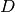
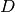
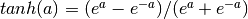
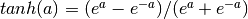
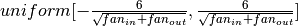

Multilayer Perceptron¶
Note
This section assumes the reader has already read through Classifying MNIST digits using Logistic Regression. Additionally, it uses the following new Theano functions and concepts: T.tanh, shared variables, basic arithmetic ops, T.grad, L1 and L2 regularization, floatX. If you intend to run the code on GPU also read GPU.
Note
The code for this section is available for download here.
The next architecture we are going to present using Theano is the single-hidden
layer Multi-Layer Perceptron (MLP). An MLP can be viewed as a logistic
regressor, where the input is first transformed using a learnt non-linear
transformation  . The purpose of this transformation is to project the
input data into a space where it becomes linearly separable. This intermediate
layer is referred to as a hidden layer. A single hidden layer is
sufficient to make MLPs a universal approximator. However we will see later
on that there are substantial benefits to using many such hidden layers, i.e. the
very premise of deep learning. See these course notes for an introduction
to MLPs, the back-propagation algorithm, and how to train MLPs.
. The purpose of this transformation is to project the
input data into a space where it becomes linearly separable. This intermediate
layer is referred to as a hidden layer. A single hidden layer is
sufficient to make MLPs a universal approximator. However we will see later
on that there are substantial benefits to using many such hidden layers, i.e. the
very premise of deep learning. See these course notes for an introduction
to MLPs, the back-propagation algorithm, and how to train MLPs.
This tutorial will again tackle the problem of MNIST digit classification.
The Model¶
An MLP (or Artificial Neural Network - ANN) with a single hidden layer can be represented graphically as follows:
Formally, a one-hidden layer MLP constitutes a function  ,
where  is the size of input vector
,
where  is the size of input vector  and
and  is the size of the output vector
is the size of the output vector  , such that,
in matrix notation:
, such that,
in matrix notation:
with bias vectors , ; weight matrices
 ,
,  and activation functions
and activation functions  and
and  .
.
The vector constitutes the hidden layer.
is the weight matrix connecting the input vector
to the hidden layer. Each column represents the weights
from the input units to the i-th hidden unit. Typical choices for
include  , with ,
or the logistic function, with . We will be using
in this tutorial because it typically yields to faster training
(and sometimes also to better local minima). Both the
and are scalar-to-scalar functions but their natural
extension to vectors and tensors consists in applying them element-wise
(e.g. separately on each element of the vector, yielding a same-size vector).
, with ,
or the logistic function, with . We will be using
in this tutorial because it typically yields to faster training
(and sometimes also to better local minima). Both the
and are scalar-to-scalar functions but their natural
extension to vectors and tensors consists in applying them element-wise
(e.g. separately on each element of the vector, yielding a same-size vector).
The output vector is then obtained as: .
The reader should recognize the form we already used for
Classifying MNIST digits using Logistic Regression. As before,
class-membership probabilities can be obtained by choosing as the
function (in the case of multi-class classification).
To train an MLP, we learn all parameters of the model, and here we use Stochastic Gradient Descent with minibatches. The set of parameters to learn is the set . Obtaining the gradients can be achieved through the backpropagation algorithm (a special case of the chain-rule of derivation). Thankfully, since Theano performs automatic differentation, we will not need to cover this in the tutorial !
Going from logistic regression to MLP¶
This tutorial will focus on a single-layer MLP. We start off by implementing a class that will represent any given hidden layer. To construct the MLP we will then only need to throw a logistic regression layer on top.
class HiddenLayer(object):
def __init__(self, rng, input, n_in, n_out, activation = T.tanh):
"""
Typical hidden layer of a MLP: units are fully-connected and have
sigmoidal activation function. Weight matrix W is of shape (n_in,n_out)
and the bias vector b is of shape (n_out,).
NOTE : The nonlinearity used here is tanh
Hidden unit activation is given by: tanh(dot(input,W) + b)
:type rng: numpy.random.RandomState
:param rng: a random number generator used to initialize weights
:type input: theano.tensor.dmatrix
:param input: a symbolic tensor of shape (n_examples, n_in)
:type n_in: int
:param n_in: dimensionality of input
:type n_out: int
:param n_out: number of hidden units
:type activation: theano.Op or function
:param activation: Non linearity to be applied in the hidden
layer
"""
self.input = input
The initial values for the weights of a hidden layer  should be uniformly
sampled from a symmetric interval that depends on the activation function. For
activation function results obtained in [Xavier10] show that the
interval should be
, where
is the number of units in the -th layer,
and is the number of units in the -th layer. For
the sigmoid function the interval is .
This initialization ensures that, early in training, each neuron operates in a
regime of its activation function where information can easily be propagated
both upward (activations flowing from inputs to outputs) and backward
(gradients flowing from outputs to inputs).
should be uniformly
sampled from a symmetric interval that depends on the activation function. For
activation function results obtained in [Xavier10] show that the
interval should be
, where
is the number of units in the -th layer,
and is the number of units in the -th layer. For
the sigmoid function the interval is .
This initialization ensures that, early in training, each neuron operates in a
regime of its activation function where information can easily be propagated
both upward (activations flowing from inputs to outputs) and backward
(gradients flowing from outputs to inputs).
# `W` is initialized with `W_values` which is uniformely sampled
# from sqrt(-6./(n_in+n_hidden)) and sqrt(6./(n_in+n_hidden))
# for tanh activation function
# the output of uniform is converted using asarray to dtype
# theano.config.floatX so that the code is runable on GPU
# Note : optimal initialization of weights is dependent on the
# activation function used (among other things).
# For example, results presented in [Xavier10]_ suggest that you
# should use 4 times larger initial weights for sigmoid
# compared to tanh
# We have no info for other function, so we use the same as tanh.
W_values = numpy.asarray( rng.uniform(
low = - numpy.sqrt(6./(n_in+n_out)),
high = numpy.sqrt(6./(n_in+n_out)),
size = (n_in, n_out)), dtype = theano.config.floatX)
if activation == theano.tensor.nnet.sigmoid:
W_values *= 4
self.W = theano.shared(value = W_values, name ='W')
b_values = numpy.zeros((n_out,), dtype= theano.config.floatX)
self.b = theano.shared(value= b_values, name ='b')
Note that we used a given non linear function as the activation function of the hidden layer. By default this is tanh, but in many cases we might want to use something else.
self.output = activation(T.dot(input, self.W) + self.b)
# parameters of the model
self.params = [self.W, self.b]
If you look into theory this class implements the graph that computes the hidden layer value . If you give this as input to the LogisticRegression class, implemented in the previous tutorial Classifying MNIST digits using Logistic Regression, you get the output of the MLP. You can see this in the following short implementation of the MLP class :
class MLP(object):
"""Multi-Layer Perceptron Class
A multilayer perceptron is a feedforward artificial neural network model
that has one layer or more of hidden units and nonlinear activations.
Intermediate layers usually have as activation function tanh or the
sigmoid function (defined here by a ``HiddenLayer`` class) while the
top layer is a softamx layer (defined here by a ``LogisticRegression``
class).
"""
def __init__(self, rng, input, n_in, n_hidden, n_out):
"""Initialize the parameters for the multilayer perceptron
:type rng: numpy.random.RandomState
:param rng: a random number generator used to initialize weights
:type input: theano.tensor.TensorType
:param input: symbolic variable that describes the input of the
architecture (one minibatch)
:type n_in: int
:param n_in: number of input units, the dimension of the space in
which the datapoints lie
:type n_hidden: int
:param n_hidden: number of hidden units
:type n_out: int
:param n_out: number of output units, the dimension of the space in
which the labels lie
"""
# Since we are dealing with a one hidden layer MLP, this will
# translate into a Hidden Layer connected to the LogisticRegression
# layer
self.hiddenLayer = HiddenLayer(rng = rng, input = input,
n_in = n_in, n_out = n_hidden,
activation = T.tanh)
# The logistic regression layer gets as input the hidden units
# of the hidden layer
self.logRegressionLayer = LogisticRegression(
input = self.hiddenLayer.output,
n_in = n_hidden,
n_out = n_out)
In this tutorial we will also use L1 and L2 regularization (see L1 and L2 regularization). For this, we need to compute the L1 norm and the squared L2 norm of the weights .
# L1 norm ; one regularization option is to enforce L1 norm to
# be small
self.L1 = abs(self.hiddenLayer.W).sum() \
+ abs(self.logRegressionLayer.W).sum()
# square of L2 norm ; one regularization option is to enforce
# square of L2 norm to be small
self.L2_sqr = (self.hiddenLayer.W**2).sum() \
+ (self.logRegressionLayer.W**2).sum()
# negative log likelihood of the MLP is given by the negative
# log likelihood of the output of the model, computed in the
# logistic regression layer
self.negative_log_likelihood = self.logRegressionLayer.negative_log_likelihood
# same holds for the function computing the number of errors
self.errors = self.logRegressionLayer.errors
# the parameters of the model are the parameters of the two layer it is
# made out of
self.params = self.hiddenLayer.params + self.logRegressionLayer.params
As before, we train this model using stochastic gradient descent with mini-batches. The difference is that we modify the cost function to include the regularization term. L1_reg and L2_reg are the hyperparameters controlling the weight of these regularization terms in the total cost function. The code that computes the new cost is:
# the cost we minimize during training is the negative log likelihood of
# the model plus the regularization terms (L1 and L2); cost is expressed
# here symbolically
cost = classifier.negative_log_likelihood(y) \
+ L1_reg * L1 \
+ L2_reg * L2_sqr
We then update the parameters of the model using the gradient. This code is almost identical to the one for logistic regression. Only the number of parameters differ. To get around this ( and write code that could work for any number of parameters) we will use the list of parameters that we created with the model params and parse it, computing a gradient at each step.
# compute the gradient of cost with respect to theta (stored in params)
# the resulting gradients will be stored in a list gparams
gparams = []
for param in classifier.params:
gparam = T.grad(cost, param)
gparams.append(gparam)
# specify how to update the parameters of the model as a dictionary
updates = {}
# given two list the zip A = [ a1,a2,a3,a4] and B = [b1,b2,b3,b4] of
# same length, zip generates a list C of same size, where each element
# is a pair formed from the two lists :
# C = [ (a1,b1), (a2,b2), (a3,b3) , (a4,b4) ]
for param, gparam in zip(classifier.params, gparams):
updates[param] = param - learning_rate*gparam
# compiling a Theano function `train_model` that returns the cost, but
# in the same time updates the parameter of the model based on the rules
# defined in `updates`
train_model =theano.function( inputs = [index], outputs = cost,
updates = updates,
givens={
x:train_set_x[index*batch_size:(index+1)*batch_size],
y:train_set_y[index*batch_size:(index+1)*batch_size]})
Putting it All Together¶
Having covered the basic concepts, writing an MLP class becomes quite easy. The code below shows how this can be done, in a way which is analogous to our previous logistic regression implementation.
"""
This tutorial introduces the multilayer perceptron using Theano.
A multilayer perceptron is a logistic regressor where
instead of feeding the input to the logistic regression you insert a
intermediate layer, called the hidden layer, that has a nonlinear
activation function (usually tanh or sigmoid) . One can use many such
hidden layers making the architecture deep. The tutorial will also tackle
the problem of MNIST digit classification.
.. math::
f(x) = G( b^{(2)} + W^{(2)}( s( b^{(1)} + W^{(1)} x))),
References:
- textbooks: "Pattern Recognition and Machine Learning" -
Christopher M. Bishop, section 5
"""
__docformat__ = 'restructedtext en'
import numpy, time, cPickle, gzip, sys, os
import theano
import theano.tensor as T
from logistic_sgd import LogisticRegression, load_data
class HiddenLayer(object):
def __init__(self, rng, input, n_in, n_out, activation = T.tanh):
"""
Typical hidden layer of a MLP: units are fully-connected and have
sigmoidal activation function. Weight matrix W is of shape (n_in,n_out)
and the bias vector b is of shape (n_out,).
NOTE : The nonlinearity used here is tanh
Hidden unit activation is given by: tanh(dot(input,W) + b)
:type rng: numpy.random.RandomState
:param rng: a random number generator used to initialize weights
:type input: theano.tensor.dmatrix
:param input: a symbolic tensor of shape (n_examples, n_in)
:type n_in: int
:param n_in: dimensionality of input
:type n_out: int
:param n_out: number of hidden units
:type activation: theano.Op or function
:param activation: Non linearity to be applied in the hidden
layer
"""
self.input = input
# `W` is initialized with `W_values` which is uniformely sampled
# from sqrt(-6./(n_in+n_hidden)) and sqrt(6./(n_in+n_hidden))
# for tanh activation function
# the output of uniform if converted using asarray to dtype
# theano.config.floatX so that the code is runable on GPU
# Note : optimal initialization of weights is dependent on the
# activation function used (among other things).
# For example, results presented in [Xavier10] suggest that you
# should use 4 times larger initial weights for sigmoid
# compared to tanh
# We have no info for other function, so we use the same as tanh.
W_values = numpy.asarray( rng.uniform(
low = - numpy.sqrt(6./(n_in+n_out)),
high = numpy.sqrt(6./(n_in+n_out)),
size = (n_in, n_out)), dtype = theano.config.floatX)
if activation == theano.tensor.nnet.sigmoid:
W_values *= 4
self.W = theano.shared(value = W_values, name ='W')
b_values = numpy.zeros((n_out,), dtype= theano.config.floatX)
self.b = theano.shared(value= b_values, name ='b')
self.output = activation(T.dot(input, self.W) + self.b)
# parameters of the model
self.params = [self.W, self.b]
class MLP(object):
"""Multi-Layer Perceptron Class
A multilayer perceptron is a feedforward artificial neural network model
that has one layer or more of hidden units and nonlinear activations.
Intermediate layers usually have as activation function thanh or the
sigmoid function (defined here by a ``SigmoidalLayer`` class) while the
top layer is a softamx layer (defined here by a ``LogisticRegression``
class).
"""
def __init__(self, rng, input, n_in, n_hidden, n_out):
"""Initialize the parameters for the multilayer perceptron
:type rng: numpy.random.RandomState
:param rng: a random number generator used to initialize weights
:type input: theano.tensor.TensorType
:param input: symbolic variable that describes the input of the
architecture (one minibatch)
:type n_in: int
:param n_in: number of input units, the dimension of the space in
which the datapoints lie
:type n_hidden: int
:param n_hidden: number of hidden units
:type n_out: int
:param n_out: number of output units, the dimension of the space in
which the labels lie
"""
# Since we are dealing with a one hidden layer MLP, this will
# translate into a TanhLayer connected to the LogisticRegression
# layer; this can be replaced by a SigmoidalLayer, or a layer
# implementing any other nonlinearity
self.hiddenLayer = HiddenLayer(rng = rng, input = input,
n_in = n_in, n_out = n_hidden,
activation = T.tanh)
# The logistic regression layer gets as input the hidden units
# of the hidden layer
self.logRegressionLayer = LogisticRegression(
input = self.hiddenLayer.output,
n_in = n_hidden,
n_out = n_out)
# L1 norm ; one regularization option is to enforce L1 norm to
# be small
self.L1 = abs(self.hiddenLayer.W).sum() \
+ abs(self.logRegressionLayer.W).sum()
# square of L2 norm ; one regularization option is to enforce
# square of L2 norm to be small
self.L2_sqr = (self.hiddenLayer.W**2).sum() \
+ (self.logRegressionLayer.W**2).sum()
# negative log likelihood of the MLP is given by the negative
# log likelihood of the output of the model, computed in the
# logistic regression layer
self.negative_log_likelihood = self.logRegressionLayer.negative_log_likelihood
# same holds for the function computing the number of errors
self.errors = self.logRegressionLayer.errors
# the parameters of the model are the parameters of the two layer it is
# made out of
self.params = self.hiddenLayer.params + self.logRegressionLayer.params
def test_mlp( learning_rate=0.01, L1_reg = 0.00, L2_reg = 0.0001, n_epochs=1000,
dataset = 'data/mnist.pkl.gz', batch_size = 20):
"""
Demonstrate stochastic gradient descent optimization for a multilayer
perceptron
This is demonstrated on MNIST.
:type learning_rate: float
:param learning_rate: learning rate used (factor for the stochastic
gradient
:type L1_reg: float
:param L1_reg: L1-norm's weight when added to the cost (see
regularization)
:type L2_reg: float
:param L2_reg: L2-norm's weight when added to the cost (see
regularization)
:type n_epochs: int
:param n_epochs: maximal number of epochs to run the optimizer
:type dataset: string
:param dataset: the path of the MNIST dataset file from
http://www.iro.umontreal.ca/~lisa/deep/data/mnist/mnist.pkl.gz
"""
datasets = load_data(dataset)
train_set_x, train_set_y = datasets[0]
valid_set_x, valid_set_y = datasets[1]
test_set_x , test_set_y = datasets[2]
# compute number of minibatches for training, validation and testing
n_train_batches = train_set_x.get_value(borrow=True).shape[0] / batch_size
n_valid_batches = valid_set_x.get_value(borrow=True).shape[0] / batch_size
n_test_batches = test_set_x.get_value(borrow=True).shape[0] / batch_size
######################
# BUILD ACTUAL MODEL #
######################
print '... building the model'
# allocate symbolic variables for the data
index = T.lscalar() # index to a [mini]batch
x = T.matrix('x') # the data is presented as rasterized images
y = T.ivector('y') # the labels are presented as 1D vector of
# [int] labels
rng = numpy.random.RandomState(1234)
# construct the MLP class
classifier = MLP( rng = rng, input=x, n_in=28*28, n_hidden = 500, n_out=10)
# the cost we minimize during training is the negative log likelihood of
# the model plus the regularization terms (L1 and L2); cost is expressed
# here symbolically
cost = classifier.negative_log_likelihood(y) \
+ L1_reg * classifier.L1 \
+ L2_reg * classifier.L2_sqr
# compiling a Theano function that computes the mistakes that are made
# by the model on a minibatch
test_model = theano.function(inputs = [index],
outputs = classifier.errors(y),
givens={
x:test_set_x[index*batch_size:(index+1)*batch_size],
y:test_set_y[index*batch_size:(index+1)*batch_size]})
validate_model = theano.function(inputs = [index],
outputs = classifier.errors(y),
givens={
x:valid_set_x[index*batch_size:(index+1)*batch_size],
y:valid_set_y[index*batch_size:(index+1)*batch_size]})
# compute the gradient of cost with respect to theta (sotred in params)
# the resulting gradients will be stored in a list gparams
gparams = []
for param in classifier.params:
gparam = T.grad(cost, param)
gparams.append(gparam)
# specify how to update the parameters of the model as a dictionary
updates = {}
# given two list the zip A = [ a1,a2,a3,a4] and B = [b1,b2,b3,b4] of
# same length, zip generates a list C of same size, where each element
# is a pair formed from the two lists :
# C = [ (a1,b1), (a2,b2), (a3,b3) , (a4,b4) ]
for param, gparam in zip(classifier.params, gparams):
updates[param] = param - learning_rate*gparam
# compiling a Theano function `train_model` that returns the cost, but
# in the same time updates the parameter of the model based on the rules
# defined in `updates`
train_model =theano.function( inputs = [index], outputs = cost,
updates = updates,
givens={
x:train_set_x[index*batch_size:(index+1)*batch_size],
y:train_set_y[index*batch_size:(index+1)*batch_size]})
###############
# TRAIN MODEL #
###############
print '... training'
# early-stopping parameters
patience = 10000 # look as this many examples regardless
patience_increase = 2 # wait this much longer when a new best is
# found
improvement_threshold = 0.995 # a relative improvement of this much is
# considered significant
validation_frequency = min(n_train_batches,patience/2)
# go through this many
# minibatche before checking the network
# on the validation set; in this case we
# check every epoch
best_params = None
best_validation_loss = numpy.inf
best_iter = 0
test_score = 0.
start_time = time.clock()
epoch = 0
done_looping = False
while (epoch < n_epochs) and (not done_looping):
epoch = epoch + 1
for minibatch_index in xrange(n_train_batches):
minibatch_avg_cost = train_model(minibatch_index)
# iteration number
iter = epoch * n_train_batches + minibatch_index
if (iter+1) % validation_frequency == 0:
# compute zero-one loss on validation set
validation_losses = [validate_model(i) for i in xrange(n_valid_batches)]
this_validation_loss = numpy.mean(validation_losses)
print('epoch %i, minibatch %i/%i, validation error %f %%' % \
(epoch, minibatch_index+1,n_train_batches, \
this_validation_loss*100.))
# if we got the best validation score until now
if this_validation_loss < best_validation_loss:
#improve patience if loss improvement is good enough
if this_validation_loss < best_validation_loss * \
improvement_threshold :
patience = max(patience, iter * patience_increase)
best_validation_loss = this_validation_loss
best_iter = iter
# test it on the test set
test_losses = [test_model(i) for i in xrange(n_test_batches)]
test_score = numpy.mean(test_losses)
print((' epoch %i, minibatch %i/%i, test error of best '
'model %f %%') % \
(epoch, minibatch_index+1, n_train_batches,test_score*100.))
if patience <= iter :
done_looping = True
break
end_time = time.clock()
print(('Optimization complete. Best validation score of %f %% '
'obtained at iteration %i, with test performance %f %%') %
(best_validation_loss * 100., best_iter, test_score*100.))
print >> sys.stderr, ('The code for file '+os.path.split(__file__)[1]+' ran for %.2fh' % ((end_time-start_time)/60.))
if __name__ == '__main__':
test_mlp()
The user can then run the code by calling :
python code/mlp.py
The output one should expect is of the form :
Optimization complete with best validation score of 2.08%, with test performance 2.18%
The code ran for 55.57 minutes
On an Intel(R) Core(TM)2 Duo CPU E8400 @ 3.00 Ghz the code runs with approximately 1.78 epoch/minute and it took 99 epochs to reach a test error of 2.18%.
To put this into perspective, we refer the reader to the results section of this page.
Tips and Tricks for training MLPs¶
There are several hyper-parameters in the above code, which are not (and, generally speaking, cannot be) optimized by gradient descent. Strictly speaking, finding an optimal set of values for these hyper-parameters is not a feasible problem. First, we can’t simply optimize each of them independently. Second, we cannot readily apply gradient techniques that we described previously (partly because some parameters are discrete values and others are real-valued). Third, the optimization problem is not convex and finding a (local) minimum would involve a non-trivial amount of work.
The good news is that over the last 25 years, researchers have devised various rules of thumb for choosing hyper-parameters in a neural network. A very good overview of these tricks can be found in Efficient BackProp by Yann LeCun, Leon Bottou, Genevieve Orr, and Klaus-Robert Mueller. In here, we summarize the same issues, with an emphasis on the parameters and techniques that we actually used in our code.
Nonlinearity¶
Two of the most common ones are the and the function. For
reasons explained in Section 4.4, nonlinearities that
are symmetric around the origin are preferred because they tend to produce
zero-mean inputs to the next layer (which is a desirable property).
Empirically, we have observed that the has better convergence
properties.
Weight initialization¶
At initialization we want the weights to be small enough around the origin so that the activation function operates in its linear regime, where gradients are the largest. Other desirable properties, especially for deep networks, are to conserve variance of the activation as well as variance of back-propagated gradients from layer to layer. This allows information to flow well upward and downward in the network and reduces discrepancies between layers. Under some assumptions, a compromise between these two constraints leads to the following initialization:  for tanh and for sigmoid. Where is the number of inputs and the number of hidden units. For mathematical considerations please refer to [Xavier10].
Learning rate¶
There is a great deal of literature on choosing a good learning rate. The simplest solution is to simply have a constant rate. Rule of thumb: try several log-spaced values () and narrow the (logarithmic) grid search to the region where you obtain the lowest validation error.
Decreasing the learning rate over time is sometimes a good idea. One simple
rule for doing that is where
 is the initial rate (chosen, perhaps, using the grid search
technique explained above),
is the initial rate (chosen, perhaps, using the grid search
technique explained above),  is a so-called “decrease constant”
which controls the rate at which the learning rate decreases (typically, a
smaller positive number, and smaller) and
is a so-called “decrease constant”
which controls the rate at which the learning rate decreases (typically, a
smaller positive number, and smaller) and  is the
epoch/stage.
is the
epoch/stage.
Section 4.7 details procedures for choosing a learning rate for each parameter (weight) in our network and for choosing them adaptively based on the error of the classifier.
Regularization parameter¶
Typical values to try for the L1/L2 regularization parameter  are
are  . In the framework that we described so
far, optimizing this parameter will not lead to significantly better
solutions, but is worth exploring nonetheless.
. In the framework that we described so
far, optimizing this parameter will not lead to significantly better
solutions, but is worth exploring nonetheless.